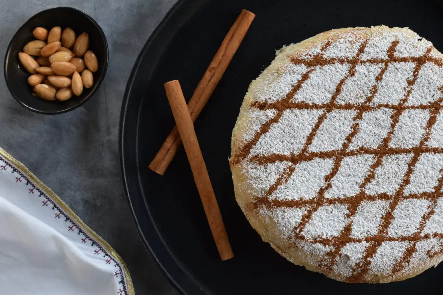

M O R O C C O R E C I P E S
Chicken Pastilla
Ingredients
- 1 tbsp olive oil
- 6 boneless chicken thighs (about 750g)
- 10g butter
- 2 onions, finely chopped
- 2 garlic cloves, finely chopped
- 1 tsp ground ginger
- ½ tsp cinnamon
- ½ tsp turmeric
- pinch of saffron
- 500ml chicken stock
- 4 eggs, beaten
- 75g ground almonds or pistachios
- 75g dried dates, finely chopped
- 1 tbsp orange blossom water
- 1 tsp orange zest
- 4 tbsp finely chopped parsley
- sea salt and freshly ground black pepper
Recipes
- Heat the oil in a large frying pan. Add the chicken and fry it skin-side down, until crisped up and brown. Turn the thighs over and cook for a couple more minutes, then remove them from the pan. Add the butter to the pan and when it has melted, add the onions and fry them gently until soft. Add the garlic and spices and fry for a couple more minutes.
- Put the chicken back in the pan and pour in the stock or 500ml of water. Season, then cover the pan and simmer for about half an hour or until the chicken is tender. Remove the chicken and set it aside. When it is cool enough to handle, finely chop the meat – it’s up to you whether you keep the skin or not. Put the liquid back over the heat and reduce it by half.
- Add the eggs to the cooking liquid and continue to cook over a low heat until you have a mixture that resembles loose scrambled eggs. Add the ground nuts and stir, then add the dates, orange blossom water, zest and finally, the chicken. Remove the pan from the heat and allow to cool.
- Preheat the oven to 180°C/Fan 160°C/Gas 4. To assemble the pie, you need a large ovenproof dish about 28cm in diameter
- Take a sheet of filo pastry and brush it with melted butter. Drape it over the dish, making sure it is gently pushed into the corners without any tearing. Repeat with another sheet of filo, this time placing it at a right angle to the first. Repeat with a further 2 sheets of filo, this time placing them on the diagonal.
- Spread the filling over the pastry. Fold over the overhanging pieces of filo in reverse order – they should just about cover the filling. Take the remaining 2 pieces of filo and cut them to fit the dish. Brush them with butter, then cover the pie, tucking under any corners. Bake the pie in the oven for about 30 minutes until the pastry is a crisp, golden brown. Remove from the oven and allow to cool a little before dusting it with the icing sugar and cinnamon.
hello Im nawfal